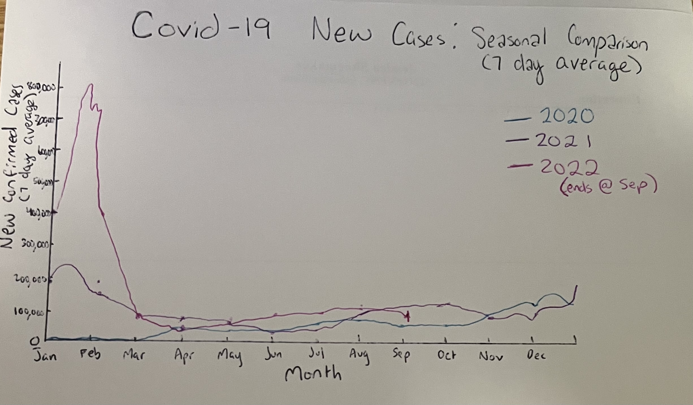
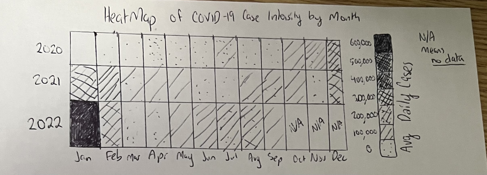
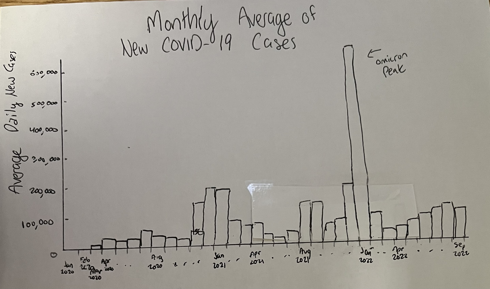
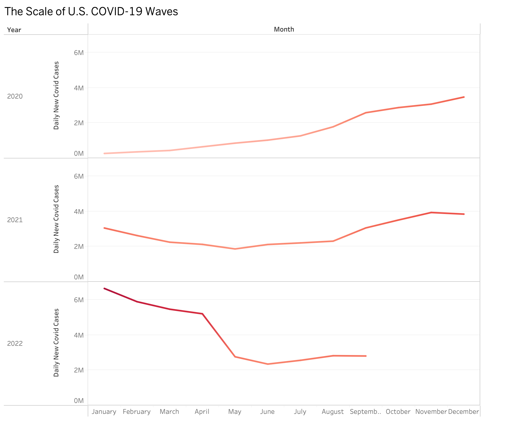

Reading & Critique

Insights about the data/visualization:
- The spiral shows three distinct yearly loops (2020, 2021, 2022), making inter-year comparisons visually immediate.
- 2022 (Omicron wave) is visually dominant, with the outermost ring expanding sharply in January, signaling the largest surge of the pandemic.
- 2020 remains tight in the center, reflecting comparatively lower reported daily cases early in the pandemic.
- Seasonal structure is visible: peaks tend to occur in winter months, while summer troughs appear more consistently across years.
- The 7-day average line smooths volatility and emphasizes the overall trend rather than daily reporting noise.
- Troughs never return to zero after 2020, showing a rising baseline of transmission across years.
Design Critique:
The spiral visualization succeeds in making temporal comparisons across years visually immediate, aligning month markers to support easy month-to-month comparison (e.g., April 2020 vs. April 2021). Red is an effective color choice to represent new COVID-19 cases, intuitively conveying danger and urgency, while the 7-day average smooths daily fluctuations and outliers, allowing large-scale waves and troughs to be more legible. The visualization is well-suited to a broad audience, particularly in a journalistic context like a New York Times opinion piece, where narrative clarity and emotional impact are as important as analytical precision.
However, the spiral design introduces tradeoffs that limit analytical clarity. The radial layout distorts time perception, making months appear unequal in duration, and the overlapping 7-day average bands reduce visual resolution, forcing approximate rather than precise estimation of case magnitude. While excellent for pattern recognition and storytelling, this visualization sacrifices quantitative precision. Future design improvements could explore hybrid approaches that maintain narrative power while enhancing perceptual accuracy, such as linear timelines with clear scales, directional cues for time, or alternative magnitude encodings. Small multiples could also preserve clarity for inter-year comparisons while minimizing geometric distortion.
Visualization Sketches

Design Rationale for Sketch 1:
- Preserves temporal comparison strengths of the spiral while eliminating geometric distortion.
- Enables direct vertical comparison of case counts for the same months across years.
- Highlights the massive scale of the 2022 Omicron peak relative to 2020 and 2021.
- Uniform linear X-axis ensures each month has equal visual weight.
- Low-case periods still cluster together slightly, limiting clarity.

Design Rationale for Sketch 2:
- Explores an alternative visual form to avoid overlapping 7-day average bands.
- Provides “big picture” view of intensity with dark shading highlighting the most severe months.
- Grid layout eliminates visual interference between years.
- Less effective at showing exact magnitude compared to line charts; loses nuance of rapid surges.
- Data after September 2022 is visually ambiguous and may be misinterpreted.

Design Rationale for Sketch 3:
- Reduces jitter from daily reporting by aggregating cases by month.
- Highlights long-term trends and emphasizes the scale of the January 2022 Omicron wave.
- Discrete month buckets remove spiral distortion and improve analytical precision.
- Monthly aggregation masks exact peak timing and slope of surges, losing fine-grained dynamics.
Final Visualization Design

Final Writeup
For my final visualization, I created a line chart showing COVID-19 cases aggregated by month, with separate lines for 2020, 2021, and 2022. To emphasize severity, I applied a red gradient along each line, with darker red for higher case counts and lighter red for lower counts. This preserves the temporal comparison of my earlier sketches while eliminating the spiral’s distortion and the heatmap’s loss of quantitative clarity. The linear X-axis ensures months are equally represented, and the 7-day average smoothing continues to reduce daily reporting noise. The chart clearly communicates that the Omicron surge in early 2022 far exceeded previous waves, while recurring winter peaks and summer troughs reveal seasonal patterns. By combining quantitative lines with intuitive color intensity, the visualization balances precision and visual impact, allowing the audience to quickly interpret both magnitude and trends.
The line mark effectively shows continuous trends, and the red gradient provides an intuitive metaphor for urgency, drawing attention to critical months without obscuring lower-intensity periods. Aggregating by month emphasizes long-term trends but obscures daily peaks and the speed of surges. Compared to my original critique, this final design addresses the spiral’s distortion and the heatmap’s ambiguity, separating each year for clearer magnitude comparison. Some trade-offs remain: very low-case periods appear visually compressed, and extreme peaks dominate visual space, slightly reducing emphasis on smaller peaks. Overall, the design synthesizes lessons from prior sketches - combining precision, interpretability, and narrative emphasis - successfully communicating the scale and seasonality of COVID-19 transmission across three critical years.